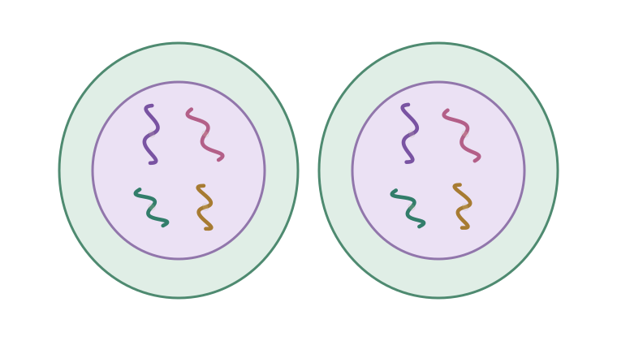

Un surco que se cierra
La membrana se estrecha desde fuera hasta separar las dos células hijas.
Biología parte 2 · Actividad 02
Cómo se divide una célula y reparte su información.
Las copias del ADN ya están listas. Ahora sigue su viaje hasta dos células hijas.

01 Lo que ya sabes
Durante la interfase, la célula crece, realiza sus funciones normales, replica su ADN y se prepara para dividirse.
La interfase pertenece al ciclo celular, pero no es una fase de la mitosis. Cuando comienza la mitosis, el ADN ya está duplicado.
Recordar cromátidas y replicación ↑02 Laboratorio en movimiento
La mitosis reparte el material genético duplicado en dos núcleos. La citocinesis completa la separación de las dos células. Toca una etapa o avanza poco a poco.
4 duplicadoscromosomas en la célula del modelo
1 célulaEstado de la separación
Durante la interfase la célula crece, realiza sus funciones y replica su ADN. Aquí la vemos al final de esa preparación, con el ADN ya duplicado y todavía poco compacto.
El ADN se copia antes de comenzar la mitosis. No se vuelve a copiar en cada fase.
El recorrido empieza al final de la interfase. Tú eliges el ritmo.
El huso mitótico es el conjunto de fibras que organiza y mueve los cromosomas. En el dibujo, cada hermana queda conectada con un polo opuesto.
Usamos cuatro cromosomas para ver el reparto: dos largos y dos cortos. Los colores ayudan a seguirlos; no representan el color real del ADN.
Agrupamos en profase la desaparición de la envoltura nuclear para mantener el modelo introductorio de cuatro fases. La citocinesis puede superponerse con las últimas fases de la mitosis.
El último paso del reparto
La citocinesis divide el citoplasma. No es lo mismo que repartir los cromosomas. Puede comenzar mientras termina la mitosis.
La membrana se estrecha desde fuera hasta separar las dos células hijas.
La placa celular crece hacia los lados y contribuye a formar la separación entre las hijas.
La pregunta que suele confundir
En una célula somática humana, el reparto normal queda así:
cromosomas
sin duplicar
cromosomas duplicados
92 cromátidas
cromosomas
en dos células hijas
Al separarse, cada cromátida pasa a ser un cromosoma independiente. Por eso hay momentáneamente 92 cromosomas en la célula todavía sin separar: 46 se dirigen a cada polo. El aumento ocurre por la separación de las hermanas, no por una nueva copia del ADN.
En nuestro modelo: 4 duplicados → 8 independientes, con 4 hacia cada polo → 4 en cada hija.
Esto también está pasando en ti
El cuerpo de un organismo multicelular puede crecer al aumentar su número de células.
Al cicatrizar una herida, se producen células que ayudan a reemplazar las dañadas.
Muchas células de la piel se pierden. Nuevas células permiten renovar y mantener ese tejido.
03 Prueba las conexiones
Dos prácticas cortas, sin calificación. Si algo no encaja, la pista te ayudará a intentarlo otra vez.
Elige la fase que sigue. Aquí ordenamos solo las cuatro fases de la mitosis.
Imagen 1 de 4
04 Comprueba lo aprendido
16 preguntas, incluidas dos con dibujos. Confirma tu elección para leer la explicación. La primera respuesta confirmada cuenta para el resultado.
Relaciona los nombres con lo que ocurre. Puedes volver a la teoría cuando lo necesites.
Recorrido terminado
Profase → Metafase → Anafase → Telofase.
El ADN se copió antes. La mitosis lo reparte en dos núcleos y la citocinesis separa las células. Cada hija conserva el número original de cromosomas.
La siguiente parada es Meiosis. Sigue dos divisiones y descubre cómo se forman células haploides con nuevas combinaciones.